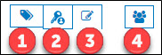
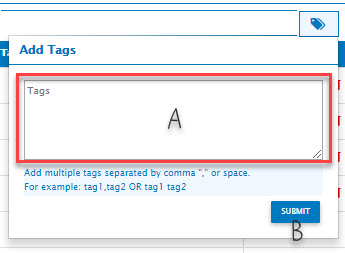
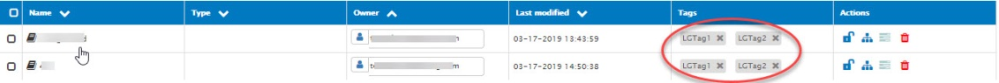
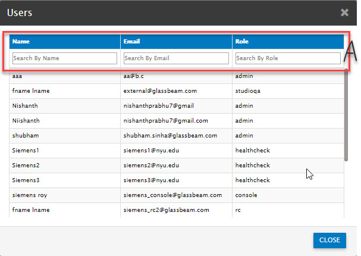

Global dashboard actions

|
Number |
Description |
|
1 |
Select single/multiple dashboards in the list. To tag the selected dashboard/s, click here and the following pop-up window is displayed. Note: Tags are descriptive aliases for the reports/dashboards. Tags serve the following purposes:

On assigning a tag, dashboards are listed along with tags as follows:  |
|
2 |
To allow specific roles to view a given dashboard, you must associate those role/s to the selected dashboards. Following are the steps to do the same:
The following screen shot is an example of the roles dropdown list.
Assign Role is by default disabled. It is enabled only if at least one dashboard is selected from the list. Know more about Roles and Permissions |
|
|
|
|
3 |
Bulk Edit: It may be necessary to edit some parameters /information for all the dashboards at once. Hence the need for bulk edit. For example: You may want to change the ownership of all multiple dashboards to one particular user. In this case, multiple dashboards can be selected and bulk edit can be used to change the dashboard owner. To know more, click here. |
|
4 |
The access to a dashboard is limited to only those roles that are assigned view access to the dashboard. Before assigning access to a user, you might want to see which role the user belongs to. Also, when you assign view access of dashboard to a role, you might also want to look up the other users in that role - who automatically get access to this dashboard because of the role assignment. You can use this option to check the user/role mapping. The following is a screen shot of the User-Role association screen.  Use the annotated area A to search the User-Role association list by the following fields:
|

Created with the Personal Edition of HelpNDoc: Free PDF documentation generator